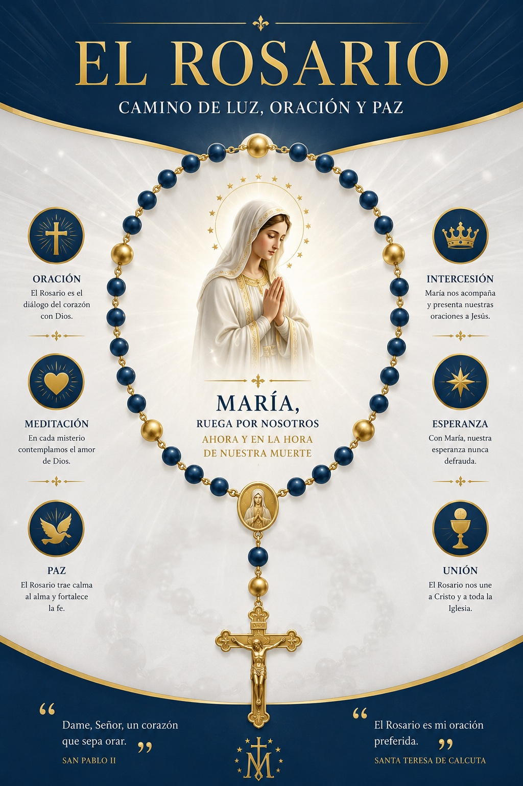

Presencia Sagrada
--:--
Cargando fecha...

"Donde están dos o tres congregados en mi nombre, allí estoy yo en medio de ellos."
MISTERIO 1 DE 5
MEDITACIÓN
Cargando Misterio...
Cargando la meditación correspondiente...
Audio Guía